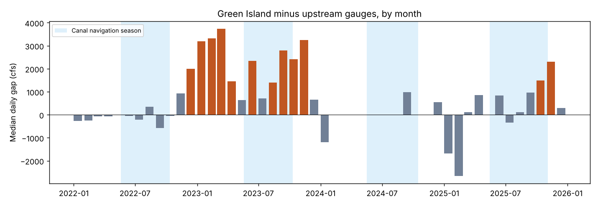
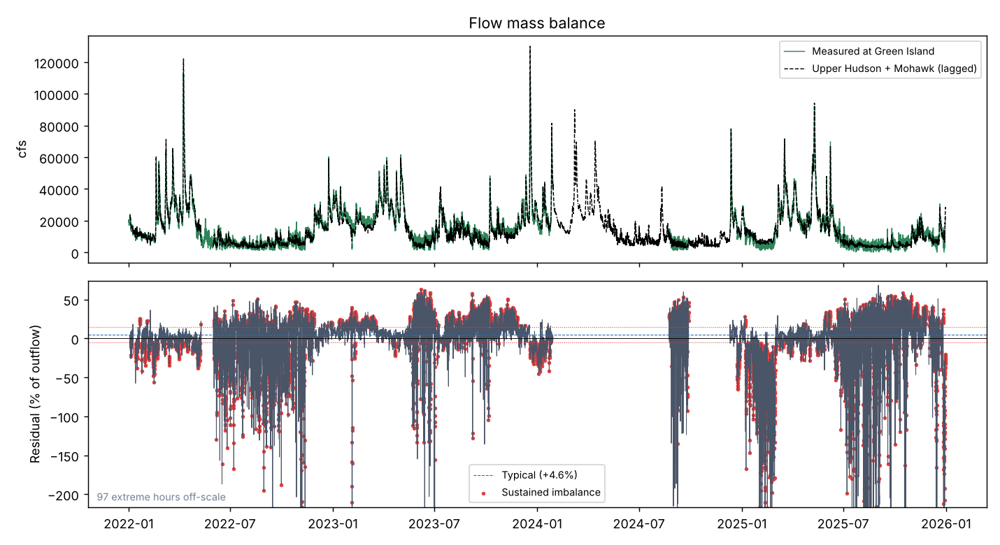
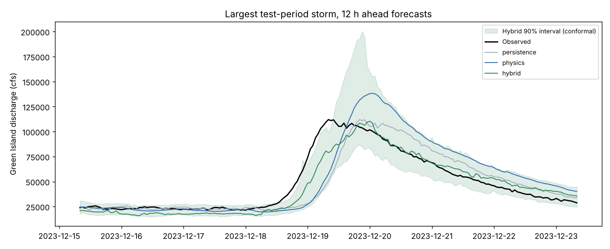
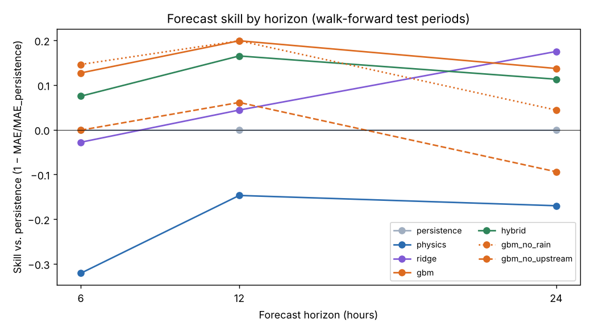

Hudson River Gauge Check
Where the Mohawk joins the Hudson near Troy, New York, the water flowing out must equal the water flowing in. I used that mass balance to test whether three U.S. Geological Survey river gauges can be trusted, then built models to forecast the river up to a day ahead.
2022-01-01 to 2025-12-31 · 15-minute USGS data · Python, polars, scikit-learn
The setup
Each 15-minute reading is checked for USGS quality codes, stuck values, one-point spikes and gaps. Readings that pass are averaged hourly and run through the balance. Travel times between gauges are fitted jointly, since fitting each tributary on its own gives the wrong answer when one storm hits both basins.
Do the gauges add up?
Mostly, yes: the median daily gap is +5.1%. Hour to hour it is noisier (13.5% median absolute), which points to dam and lock operations releasing water in pulses rather than to faulty sensors.
My first explanation was the Barge Canal: part of the Mohawk is diverted around the Cohoes gauge through the Waterford locks and rejoins the Hudson above Green Island. I tested it against the canal's actual opening and closing dates for 2022–2025, and it does not hold up. Measured in cubic feet per second, the gap is about the same with the canal open (591 cfs) as closed (639 cfs), and it moved the expected way at only 3 of 5 openings and closings. It only looked seasonal in percent terms because the river is low in late summer (6,640 cfs vs 18,440 cfs), so the same gap is a bigger share.

The real pattern is a step. From December 2022 to November 2023 the gap jumps to a median of 2,597 cfs, then drops back. Outside that stretch the median gap is 99 cfs (+0.7%). An offset that switches on and off like that, regardless of season or flow, looks like a calibration problem at one gauge rather than anything physical in the river.
Next test: USGS crews measure each river by hand several times a year, and the gauges are calibrated against those visits. Comparing each gauge's reported flow with the hand measurements during the offset period will show which gauge drifted (step7_investigate.py does this).

How trustworthy is each gauge?
| Discharge gauge | Readings | Flagged | Estimated | Stuck | Spikes | Provisional |
|---|---|---|---|---|---|---|
| Green Island (01358000) | 114,602 | 3.6% | 3,813 | 0 | 306 | 2,534 |
| Mohawk at Cohoes (01357500) | 139,824 | 0.3% | 0 | 89 | 278 | 0 |
| Upper Hudson (01335754) | 139,343 | 4.8% | 2,320 | 4,190 | 175 | 3,411 |
Findings worth knowing: for most of 2024 Green Island published only 2-hourly estimated values, and the Mohawk's conductance and temperature sensors were stuck or spiking for long stretches.
Forecasting Green Island
Five models predict flow 6 to 24 hours ahead using upstream flows and basin rainfall. They are tested walk-forward: always trained on the past and scored on the future, with an embargo so no training target overlaps the test period. Skill is the share of error removed compared with assuming the flow stays the same.
| Horizon | Mass balance | Linear (ridge) | Boosted trees | Balance + trees | 90% interval coverage |
|---|---|---|---|---|---|
| 6 h ahead | -32% | -3% | +13% | +7% | 90% |
| 12 h ahead | -15% | +4% | +20% | +17% | 90% |
| 24 h ahead | -17% | +17% | +14% | +11% | 90% |
Best model per horizon in green; negative skill means worse than assuming no change. Prediction intervals are calibrated with conformal prediction, so about 90% of real outcomes should fall inside.


What I learned
- Physics found problems rules could not. A sensor drifting out of calibration still reports plausible numbers; only the balance against its neighbours exposes it.
- Real data broke assumptions that synthetic data never tested: a date-range bug that dropped every December 31st, USGS changing its quality codes between APIs, and a sensor that only existed for six weeks.
- My first explanation for the imbalance, the Barge Canal, was wrong. Testing it against the real canal dates and measuring the gap in cfs instead of percent turned up a year-long calibration offset instead.
- The simple mass-balance forecast lost to "no change" on the real river. Reporting that honestly is more useful than hiding it.